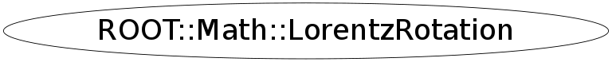

class ROOT::Math::LorentzRotation
Lorentz transformation class with the (4D) transformation represented by
a 4x4 orthosymplectic matrix.
See also Boost, BoostX, BoostY and BoostZ for classes representing
specialized Lorentz transformations.
Also, the 3-D rotation classes can be considered to be special Lorentz
transformations which do not mix space and time components.
@ingroup GenVector
Function Members (Methods)
public:
Data Members
public:
| enum ELorentzRotationMatrixIndex { | kXX | |
| kXY | ||
| kXZ | ||
| kXT | ||
| kYX | ||
| kYY | ||
| kYZ | ||
| kYT | ||
| kZX | ||
| kZY | ||
| kZZ | ||
| kZT | ||
| kTX | ||
| kTY | ||
| kTZ | ||
| kTT | ||
| }; |
private:
| ROOT::Math::LorentzRotation::Scalar | fM[16] |
Class Charts
{kind=link}
{kind=link}
{kind=link}
{kind=link}

Function documentation
LorentzRotation()
========== Constructors and Assignment =====================
Default constructor (identity transformation)
LorentzRotation(double* begin, double* end)
Construct given a pair of pointers or iterators defining the
beginning and end of an array of sixteen Scalars
{ SetComponents(begin,end); } LorentzRotation( LorentzRotation const & r )
The compiler-generated and dtor are OK but we have implementwd the copy-ctor and
assignment operators since we have a template assignment
Copy constructor
explicit LorentzRotation( Boost const & b )
Construct from a pure boost
{ b.GetLorentzRotation( fM+0 ); }explicit LorentzRotation( Rotation3D const & r )
Construct from a 3-D rotation (no space-time mixing)
explicit LorentzRotation( AxisAngle const & a )
explicit LorentzRotation( EulerAngles const & e )
explicit LorentzRotation( Quaternion const & q )
explicit LorentzRotation( RotationX const & r )
explicit LorentzRotation( RotationY const & r )
explicit LorentzRotation( RotationZ const & r )
explicit LorentzRotation(const ForeignMatrix & m)
Construct from a linear algebra matrix of size at least 4x4,
which must support operator()(i,j) to obtain elements (0,3) thru (3,3).
Precondition: The matrix is assumed to be orthosymplectic. NO checking
or re-adjusting is performed.
Note: (0,0) refers to the XX component; (3,3) refers to the TT component.
{ SetComponents(m); } SetComponents(ROOT::Math::LorentzRotation::Scalar xx, ROOT::Math::LorentzRotation::Scalar xy, ROOT::Math::LorentzRotation::Scalar xz, ROOT::Math::LorentzRotation::Scalar xt, ROOT::Math::LorentzRotation::Scalar yx, ROOT::Math::LorentzRotation::Scalar yy, ROOT::Math::LorentzRotation::Scalar yz, ROOT::Math::LorentzRotation::Scalar yt, ROOT::Math::LorentzRotation::Scalar zx, ROOT::Math::LorentzRotation::Scalar zy, ROOT::Math::LorentzRotation::Scalar zz, ROOT::Math::LorentzRotation::Scalar zt, ROOT::Math::LorentzRotation::Scalar tx, ROOT::Math::LorentzRotation::Scalar ty, ROOT::Math::LorentzRotation::Scalar tz, ROOT::Math::LorentzRotation::Scalar tt)
Assign from another LorentzRotation
SetComponents(ROOT::Math::LorentzRotation::Scalar xx, ROOT::Math::LorentzRotation::Scalar xy, ROOT::Math::LorentzRotation::Scalar xz, ROOT::Math::LorentzRotation::Scalar xt, ROOT::Math::LorentzRotation::Scalar yx, ROOT::Math::LorentzRotation::Scalar yy, ROOT::Math::LorentzRotation::Scalar yz, ROOT::Math::LorentzRotation::Scalar yt, ROOT::Math::LorentzRotation::Scalar zx, ROOT::Math::LorentzRotation::Scalar zy, ROOT::Math::LorentzRotation::Scalar zz, ROOT::Math::LorentzRotation::Scalar zt, ROOT::Math::LorentzRotation::Scalar tx, ROOT::Math::LorentzRotation::Scalar ty, ROOT::Math::LorentzRotation::Scalar tz, ROOT::Math::LorentzRotation::Scalar tt)
operator=( Rotation3D const & r )
Assign from a 3-D rotation
{ return operator=(LorentzRotation(r)); } operator=(const ForeignMatrix & m)
Assign from a linear algebra matrix of size at least 4x4,
which must support operator()(i,j) to obtain elements (0,3) thru (3,3).
Precondition: The matrix is assumed to be orthosymplectic. NO checking
or re-adjusting is performed.
void Rectify()
Re-adjust components to eliminate small deviations from a perfect
orthosyplectic matrix.
GetComponents( Foreign4Vector& v1, Foreign4Vector& v2, Foreign4Vector& v3, Foreign4Vector& v4 )
Get components into four 4-vectors which will be the (orthosymplectic)
columns of the rotation matrix. (The 4-vector class must have a
constructor from 4 Scalars used as x, y, z, t)
void GetComponents(IT begin, IT end)
Get the 16 matrix components into data specified by an iterator begin
and another to the end of the desired data (16 past start).
operator()(const ROOT::Math::LorentzVector<ROOT::Math::PxPyPzE4D<double> >& v) const
=========== operations ==============
Lorentz transformation operation on a Minkowski ('Cartesian')
LorentzVector
return ! operator==(rhs)